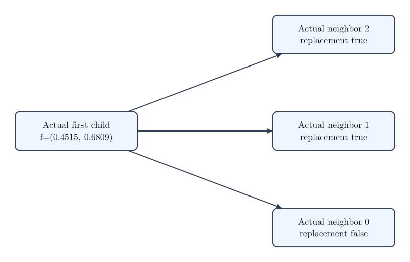
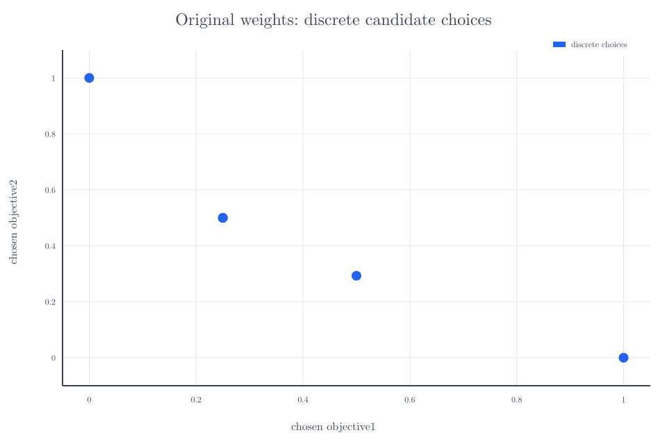
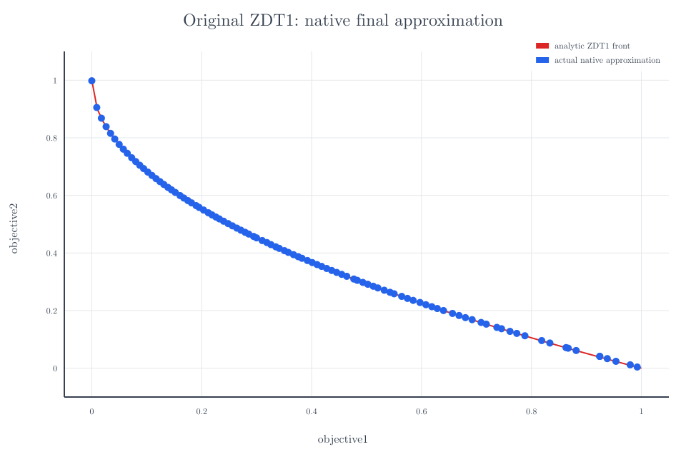
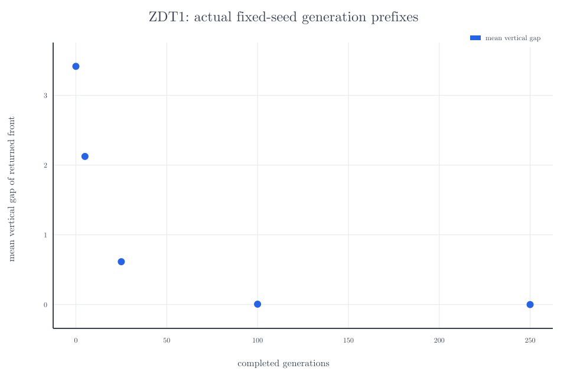

MOEA/D decomposition
Abstract
Minimizing several conflicting objectives produces a set of tradeoffs rather than a single best answer. MOEA/D approximates that set through neighboring scalar subproblems. We derive its scalarizations, inspect actual child replacements, retain the original discrete weight illustration and thirty-variable ZDT1 experiment, and qualify front-gap and computational-cost claims using the implementation’s real setup and output filtering.
Decompose a vector objective
A feasible point dominates another when every minimized objective is no larger and at least one is strictly smaller. MOEA/D assigns each population slot a simplex weight, then optimizes nearby weights together. The native Tchebycheff score anchors to the current ideal point z, the componentwise minimum seen after initialization. It uses a positive floor on zero weights.
Weights come from the Das-Dennis simplex lattice, with H divisions and binomial(H+m−1,m−1) rows. The code chooses the largest lattice fitting max(requested population,m), exactly the requested count for two objectives. Each slot's neighborhood consists of its closest weights in Euclidean distance, including itself. Equal-distance ordering follows the native standard sort rather than a promised portable tie rule.
At each sequential subproblem visit, two parents are sampled with replacement from its neighborhood and can coincide. Shared SBX crossover produces two children; only the first is mutated and evaluated. The ideal is updated before scalar comparisons. The child replaces every visited neighbor whose score it ties or improves, using that neighbor's weight. Updates take effect immediately, so later visits can use already replaced parents. There is no external archive.
Read an actual child and its neighbor decisions
A five-slot, two-variable ZDT1 run with two generations is small enough to inspect. Its first child and three neighbor comparisons come directly from the producer. Both candidate and incumbent scores use the same already updated ideal. The diagram labels each actual replacement decision, avoiding a fabricated optimization history.
#include <dm/dm.hpp>
int main() {
std::filesystem::create_directories("build");
dm::optim::MOEADOptions o;
o.population_size = 5;
o.neighborhood_size = 3;
o.max_generations = 2;
o.seed = 1;
dm::optim::ZDT1Objective f(2);
auto t = dm::optim::MOEAD(o).trace(f, {0, 0}, {1, 1});
auto &s = t.steps.front();
dm::graphics::Diagram d;
d.node("child", {0, 3},
std::format("Actual first child\nf=({:.4f}, {:.4f})",
s.child.objectives[0], s.child.objectives[1]));
std::print("Actual parents: {}, {}. Actual callback count: {}.\n\n| neighbor slot | incumbent score | " "child score | replaced |\n| ---: | ---: | ---: | --- |\n",
s.parent_a, s.parent_b, t.evaluations);
for (std::size_t i = 0; i < s.replacements.size(); ++i) {
auto &r = s.replacements[i];
std::print("| {} | {} | {} | {} |\n", r.neighbor, r.incumbent_score,
r.child_score, r.replaced);
auto id = std::to_string(i);
d.node(id, {8, double(i) * 3},
std::format("Actual neighbor {}\nreplacement {}", r.neighbor,
r.replaced)).edge("child", id);
}
d.save_svg("build/moead_tiny.svg");
}Actual parents: 2, 0. Actual callback count: 16.
| neighbor slot | incumbent score | child score | replaced |
|---|---|---|---|
| 0 | 3.617617101998836e-07 | 0.22424786794452406 | false |
| 1 | 5.211431796698579 | 0.16818590095839303 | true |
| 2 | 0.19064946942278893 | 0.18100446919338256 | true |

Retain the original discrete weight illustration
The original five candidate objective pairs are(0,1),(0.25,0.5),(0.5,0.293),(0.75,0.134),(1,0). Two values are rounded approximations to the ZDT1 curve. The five original weights and the fixed ideal(0,0) are retained in the native demonstration helper. It selects the first strict minimum over this discrete list. These choices illustrate scalar preference and are neither continuous global minimizers nor a solver population.
#include <dm/dm.hpp>
int main() {
std::filesystem::create_directories("build");
auto rows = dm::optim::moead_original_choices();
std::vector<double> x, y;
std::print("| weight1 | weight2 | chosen f1 | chosen rounded f2 | actual score |\n| ---: | ---: | ---: " "| ---: | ---: |\n");
for (auto &r : rows) {
x.push_back(r.objectives[0]);
y.push_back(r.objectives[1]);
std::print("| {} | {} | {} | {} | {} |\n", r.weight[0], r.weight[1],
r.objectives[0], r.objectives[1], r.score);
}
auto p = dm::graphics::RPlot::create();
p.points(x, y, "discrete choices", {37, 99, 235}, 7).title(
"Original weights: discrete candidate choices").x_label(
"chosen objective1").y_label("chosen objective2").save_svg(
"build/moead_weights.svg");
}| weight1 | weight2 | chosen f1 | chosen rounded f2 | actual score |
|---|---|---|---|---|
| 1 | 0 | 0 | 1 | 1e-06 |
| 0.7 | 0.3 | 0.25 | 0.5 | 0.175 |
| 0.5 | 0.5 | 0.25 | 0.5 | 0.25 |
| 0.3 | 0.7 | 0.5 | 0.293 | 0.20509999999999998 |
| 0 | 1 | 1 | 0 | 1e-06 |

Retain the original thirty-variable ZDT1 experiment
ZDT1 uses f1=x0, g=1+9 times the mean of the remaining coordinates, and f2=g times(1−sqrt(f1/g)) on the unit box. Its analytic front has all remaining coordinates zero, hence g=1 and f2=1−sqrt(f1). The native benchmark validates dimensions and unit-box inputs, and the analytic front helper provides the reference curve.
The original run uses30 variables,100 requested weights, neighborhood20,250 generations, default variation settings, Tchebycheff decomposition and seed1. The returned set is the non-dominated subset of the final population, with identical non-dominated duplicates retained. Its vertical gap is f2−(1−sqrt(f1)); the mean does not measure front coverage or hypervolume. The table reports first-objective coverage separately. All values below come from this checkout rather than the old frozen claim of a particular gap.
#include <dm/dm.hpp>
int main() {
std::filesystem::create_directories("build");
dm::optim::MOEADOptions o;
o.seed = 1;
dm::optim::ZDT1Objective f;
auto front =
dm::optim::MOEAD(o).optimize(f, std::vector<double>(30, 0),
std::vector<double>(30, 1));
auto s = dm::optim::zdt1_front_summary(front);
std::vector<double> x, y, tx, ty;
for (auto &p : front) {
x.push_back(p.objectives[0]);
y.push_back(p.objectives[1]);
}
for (auto &p : dm::optim::zdt1_front()) {
tx.push_back(p.objectives[0]);
ty.push_back(p.objectives[1]);
}
std::print("| returned points incl duplicates | min f1 | max f1 | mean vertical gap | max vertical gap " "|\n| ---: | ---: | ---: | ---: | ---: |\n| {} | {} | {} | {} | {} |\n",
s.points, s.min_f1, s.max_f1, s.mean_gap, s.max_gap);
auto p = dm::graphics::RPlot::create();
p.line(tx, ty, "analytic ZDT1 front", {220, 38, 38}, 2).points(
x, y, "actual native approximation", {37, 99, 235}, 5).title(
"Original ZDT1: native final approximation").x_label("objective1").y_label("objective2").save_svg("build/moead_original.svg");
}| returned points incl duplicates | min f1 | max f1 | mean vertical gap | max vertical gap |
|---|---|---|---|---|
| 99 | 6.779751231235365e-06 | 0.9924684813020673 | 0.0003317414522604452 | 0.0025252547274442344 |

Finite prefixes and complete cost accounting
Repeated runs with the same seed and options, changing only the generation cap, share the same trajectory prefix on this toolchain. Their returned fronts can change in size and coverage, and their mean gap need not improve monotonically. The finite sweep below compares those actual end states without claiming convergence from a visual trend.
The implementation first evaluates one random probe solely to discover objective count. It discards that point and does not include it in the ideal. Initialization then evaluates N points and each generation evaluates N more: exactly1+N+G*N successful callbacks. This extra probe matters for stateful or expensive objectives. Neighbor setup compares weight distances while sorting all N candidates per slot, with O(m*N squared log N) coarse work, and final non-dominated extraction costs O(m*N squared). A generation uses O(N*(n+T*m)) work excluding callback and variation details; describing only neighborhood updates would omit setup, variation and output filtering.
#include <dm/dm.hpp>
int main() {
std::filesystem::create_directories("build");
std::vector<double> x, y;
std::print("| generations | callbacks by exact schedule | returned points | min f1 | max f1 | actual " "mean gap |\n| ---: | ---: | ---: | ---: | ---: | ---: |\n");
for (std::size_t g : {0U, 5U, 25U, 100U, 250U}) {
dm::optim::MOEADOptions o;
o.seed = 1;
o.max_generations = g;
dm::optim::ZDT1Objective f;
auto front =
dm::optim::MOEAD(o).optimize(f, std::vector<double>(30, 0),
std::vector<double>(30, 1));
auto s = dm::optim::zdt1_front_summary(front);
x.push_back(g);
y.push_back(s.mean_gap);
std::print("| {} | {} | {} | {} | {} | {} |\n", g, 1 + 100 + 100 * g,
s.points, s.min_f1, s.max_f1, s.mean_gap);
}
auto p = dm::graphics::RPlot::create();
p.points(x, y, "mean vertical gap", {37, 99, 235}, 6).title(
"ZDT1: actual fixed-seed generation prefixes").x_label(
"completed generations").y_label("mean vertical gap of returned front").save_svg("build/moead_prefixes.svg");
}| generations | callbacks by exact schedule | returned points | min f1 | max f1 | actual mean gap |
|---|---|---|---|---|---|
| 0 | 101 | 10 | 0.005038092987687461 | 0.7660951498806624 | 3.41473873566786 |
| 5 | 601 | 38 | 0.11121099289175684 | 0.9158585757505726 | 2.1235248888798384 |
| 25 | 2601 | 79 | 0.01414773523956955 | 0.6014611168145959 | 0.6147194051024196 |
| 100 | 10101 | 97 | 3.60652632726572e-05 | 0.616666569539016 | 0.006169416485486112 |
| 250 | 25101 | 99 | 6.779751231235365e-06 | 0.9924684813020673 | 0.0003317414522604452 |

Contracts, conclusion and references
Bounds must be nonempty, finite, matching and strictly ordered with representable widths. Probabilities, distribution indices and decomposition names are validated before callbacks. Requested population is2..1000000; objective count must be fixed, finite and at least two, checked after its actual evaluation. Invalid shapes, nonfinite values, unrepresentable scalar arithmetic and count geometry throw; earlier callback effects remain. Parent sampling with replacement and the discarded probe preserve valid legacy scheduling.
The optional trace owns options, bounds, probe, weights, neighborhoods, initial/final populations, ideal points and all actual offspring/replacement records. Its quota counts stored vector rows and elements, point records and coordinates/objectives, ideal scalars and decision records; default1000000, zero disables. It is an online storage limit, not a transactional callback budget: earlier evaluations may have happened when it fails. No partial trace is returned.
The actual scalar decisions explain the mechanism, while the original experiment measures finite coverage and error. Neither a small mean gap nor a decomposition argument establishes a global Pareto-set guarantee or a universal advantage over other evolutionary methods.
Zhang and Li, MOEA/D: A multiobjective evolutionary algorithm based on decomposition (2007) introduces the framework. Das and Dennis, Normal-boundary intersection (1998) describes the simplex-lattice context. Zitzler, Deb and Thiele, Comparison of multiobjective evolutionary algorithms: Empirical results (2000) defines the benchmark family.
Verification
The ten-report batch passes95 CTest cases,31 directly instrumented ASan/UBSan
cases,83 compiled and executed public examples,363/363 scoped documentation
definitions and ten representative hovers. Independent Python integer
arithmetic, MT19937-64/variation replay, graph sets, analytic interpolation,
circle boundary enumeration and actual-sample integration reconstruction agree
on915459 captured records. All six original RMS summaries are separately checked
using96 native MISER estimates and1600000 independently reproduced
plain-comparator points. Frozen valid-input comparisons include the original
seeded solver paths and full MOEA/D fronts. Ten checkout headers and ten
identically installed development headers compile independently, and an
installed-header native consumer links and runs. Each report has four executed
complete programs, four reviewed native figures and both HTML/Markdown exports
with computed-result and image-byte checks. This is a scoped native API audit,
not an installation claim for every language binding. Receipts:
build/mepml-conversion/batch-234-243/.